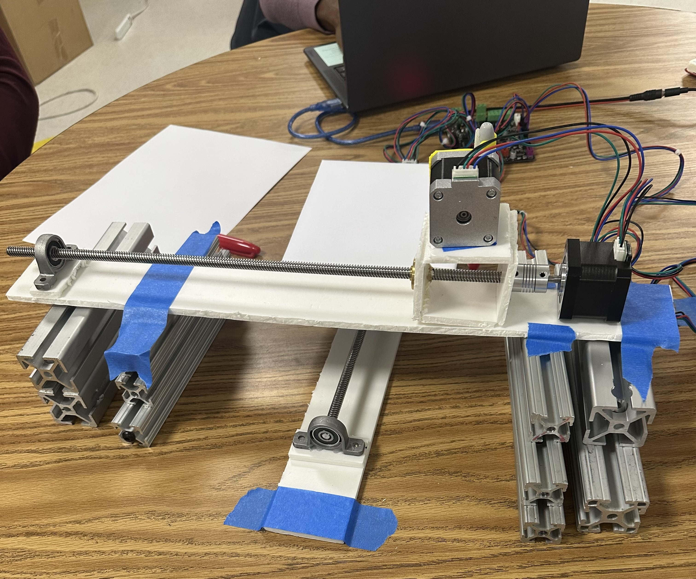
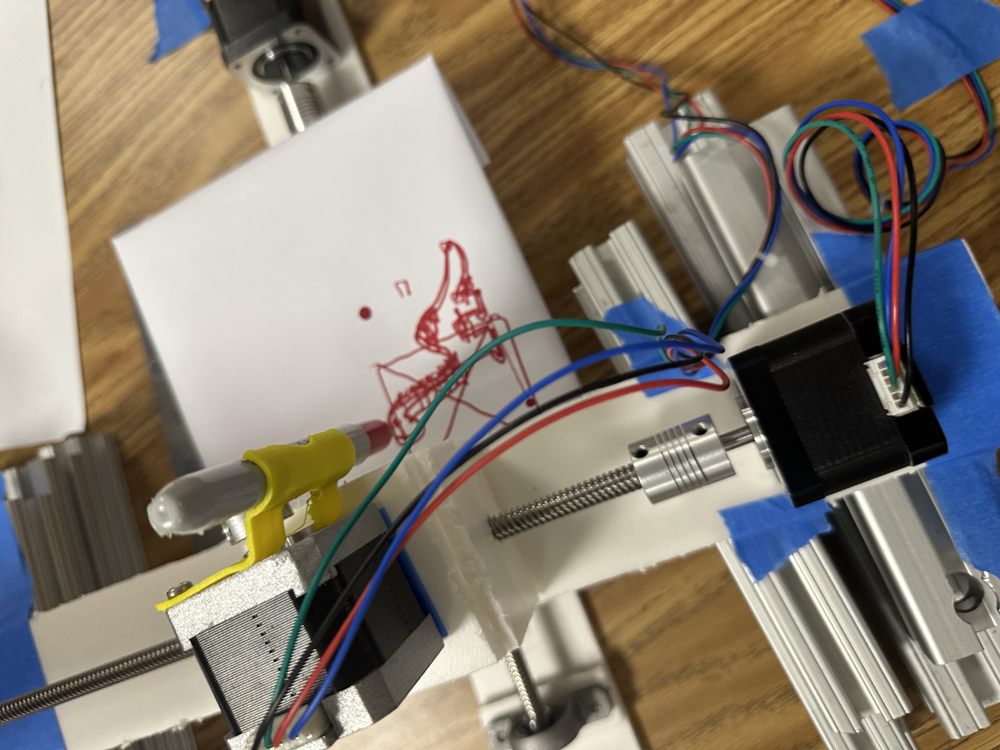
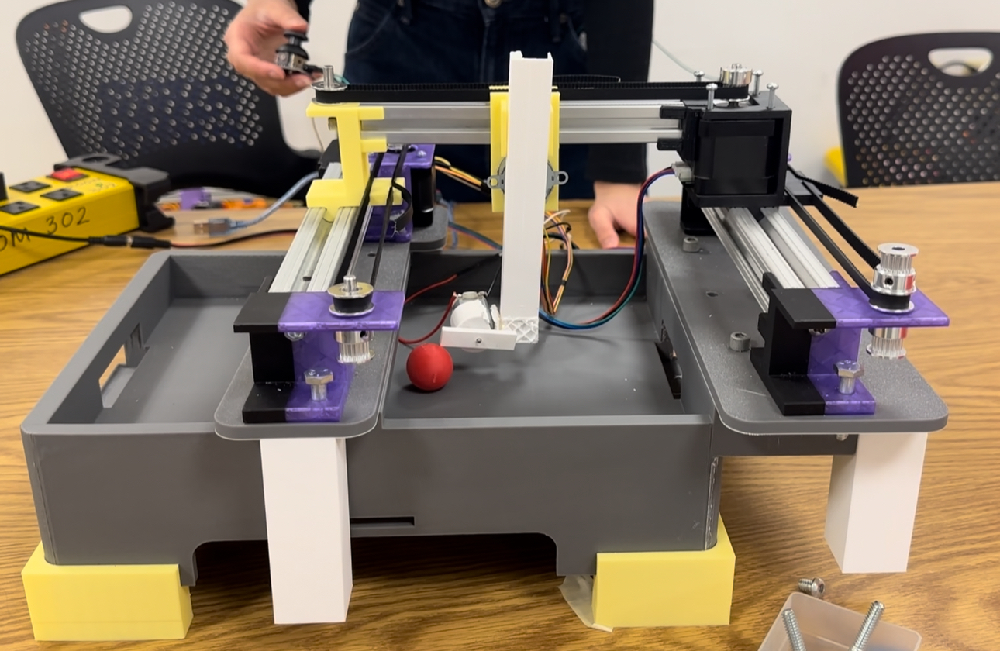

ME360: Electromechanical Design Projects
Motor Encoder Classwork

Figure 1: Motor and Arduino Connection Setup
This project involved designing and implementing a closed-loop motor monitoring and control system using an Arduino Uno, and a DC motor with a rotary encoder, The goal was to accurately determine the angular position, rotational speed (RPM), and linear speed while maintaining reliable control over motor direction and rotation. This setup was conducted to prepare for the motorized car project.
The rotary encoder attached to the motor shaft provided pulse signals corresponding to the DC shaft movement. These pulses were read by the Arduino using interrupt-based counting to ensure accurate measurement even at higher speeds. By tracking the number of encoder ticks over time, the system computed the angular displacement and rotational velocity of the motor. RPM was calculated from the pulse frequency within a sampling interval.
pinMode(2,INPUT);
pinMode(3,INPUT);
attachInterrupt(digitalPinToInterrupt(2),myFunction,RISING);
Serial.begin(9600);
}
volatile long int count=0;
void loop() {
String cad="";
//cad="Angle (deg): "+String(count*1.5)+"; Velocity (r.p.m.): "+String(getSpeed(100));
cad=getSpeed(100);
Serial.println(cad);
delay(100);
}
void myFunction(){
if (digitalRead(3))
count++;
else
count--;
}
float getSpeed(int milliseconds){
long int count0=0, count1=0;
float theta=0, w=0, rpm=0;
count0=count;
delay(milliseconds);
count1=count;
theta=(count1-count0)*1.5;
w=theta/(milliseconds/1000.0); // deg/s
rpm=w/360.0*60;
return(rpm);
}
Figure 2: Code to Obtain Motor Speed
The code takes in the speed every 'milliseconds' number of milliseconds. The motor is connected to pins 2 and 3 and in the function 'myFunction,' a counter increases by one value if either pin is on. The float 'getSpeed' takes in the difference of position every 100 milliseconds to find the angle that the motor is at during any given point in time. To convert it to RPM, the 'getSpeed' function converts the angle to degrees/seconds, then to RPM. In the loop function, it continues to take in the angle of the motor driver and prints it out for the user to see.
Trash Can Project

Figure 1: Given Parameters for the Trash Can


Figure 2: Real Arm Dimensions from Perpendicular Bisectors
In order to find the dimensions of the trash can's arms, I decided to map out the positions
of the tray using Math Illustrations. I setup an intermediate tray position away from the trashcan to prevent its
contents from toppling over. Then, I mapped out the change in positions of the midpoint (A) and one of the endpoints (B) by
drawing out lines between the points. Those lines connect as such: A to A', B to B', A' to A'', and B' to B''. Finally, I
found the perpendicular bisectors of those lines and placed points where they intersected. The position of the points are
where the trash can's arms are located and their lengths are where they attach to A' and B'.
All units are in centimeters.

Figure 3: Solidworks CAD of the Trash Can
The objective of this project was to design a trash can that can lift a tray to dispose of trash without dropping it. I conducted a geometrical simulation using sketches to determine where the arm should be placed on the trash can before modeling the final prototype using Solidworks.
4 Bar Crank
This project involved analyzing the motion of a four bar crank mechanism using a CAD motion simulation in Solidworks. A motion study was created to simulate the mechanism operating at a constant angular speed, then at a speed of 600 RPM.

Figure 1: 4 Bar Mechanism CAD in Solidworks
From the motion study, the maximum motor torque, the crank angle at which this torque occurs, the maximum vertical forces acting on the bearing supports, and the minimum motor power required to maintain a constant rotational speed were obtained. All components in the mechanism are made from plain carbon steel and gravity is included in the motion study.

Figure 2:Trace path of Points at 1/4", 1/2", and 3/4" on the Extension Bar

Figure 3: Motor Torque Vs. Time for 4 Bar Motion Study
From the plot, the maximum torque is 20 Nmm at an angle of 0 degrees. The extension bar and crank move on the x axis and the maximum vertical force exerted on both bearings is 0.3N. The power required to move the motor at 600RPM is 425 Watts. The negative motor torque, which indicates points where the inertia help the arms move rather than resisting it. This means that the motor torque has to slow down the rotation of the crank to retain the speed of 20RPM.
Moving Car Balance Beam
Group 11: Anything is Fine
Project Date: 3/4/2026
We designed and assembled a car capable of transporting a 12 inch bar at a controlled speed. The system was designed to prevent the bar from tipping or falling during transport. Careful consideration was given to the size of the wheels, speed control, and proper assembly to ensure the car can withstand multiple trials.

Figure 1: Hand Calulations to Find Maximum Acceleration of the Car
From our hand calculations, the maximum acceleration of the car is around 0.8m/s^2.

Figure 2: Motion Study Solidworks Setup of the Car With the Beam
I simulated the movement of the car with the beam on top. In order to simulate it, I chose a position for the beam to sit on the car and I mated it to prevent it from tipping over. This was done just to understand the theoretical maximum speed that the car and beam can travel at to set our motor speed. To obtain 0 redundancies, I kept my simulation simple and decided to leave out the wheels and other components however, it does not reflect a full CAD of the final prototype. Since there were no wheels in my model, I subbed in a linear motor for the typical rotary motor. The RPM was automatically set by Solidworks after I specified the 10 ft distance that the car must travel. Results from the motion study are shown below.

Figure 3: Linear Acceleration vs. Time Graph of the Motion Study
After simulating the path that our car will take, we determined the theoretical maximum acceleration of the car

Figure 4: Reaction Forces vs. Time graph of the Motion Study
From our results, we determined that the car can travel at a theoretical max speed of 0.7m/s.

Figure 5: Final Assembled Prototype of Our Car
The DC motor is hooked up to a HW-95 board and an Arduino Uno. The motor control pins are hooked up to pins 2 and 3 on the Arduino and they are alternatively powered to move the car forward and backwards.
const int PWM_PIN = 6;
void setup() {
pinMode(2,INPUT);
pinMode(3,INPUT);
attachInterrupt(digitalPinToInterrupt(2),myFunction,RISING);
Serial.begin(9600);
pinMode(DIR_PIN, OUTPUT);
pinMode(PWM_PIN, OUTPUT);
digitalWrite(PWM_PIN, LOW);
digitalWrite(DIR_PIN, LOW);
}
volatile long int count=0;
float v_out=0;
float current_speed=0;
void loop() {
float v_out=0;
for (int i = 0; i < 18; i++) {
v_out = v_out + 12.4;
Serial.println(String("v_out: ") + v_out);
Serial.println(current_speed);
//delay(100);
if (v_out > 235) {
v_out = 235;
}
analogWrite(PWM_PIN, (int)v_out);
current_speed = getSpeed(100);
delay(100);
}
for (int i = 0; i < 18; i++) {
v_out = v_out - 12.4;
Serial.println(String("v_out: ") + v_out);
Serial.println(current_speed);
if (v_out < 0) {
v_out = 0;
}
analogWrite(PWM_PIN, int(v_out));
current_speed = getSpeed(100);
delay(85);
}
delay(1000);
digitalWrite(PWM_PIN, LOW);
for (int i = 0; i < 18; i++) {
v_out = v_out + 12.4;
Serial.println(String("v_out: ") + v_out);
Serial.println(current_speed);
//delay(100);
if (v_out > 235) {
v_out = 235;
}
analogWrite(DIR_PIN, (int)v_out);
current_speed = getSpeed(100);
delay(100);
}
for (int i = 0; i < 18; i++) {
v_out = v_out - 12.4;
Serial.println(String("v_out: ") + v_out);
Serial.println(current_speed);
if (v_out < 0) {
v_out = 0;
}
analogWrite(DIR_PIN, int(v_out));
current_speed = getSpeed(100);
delay(85);
}
// Stop completely at the end
analogWrite(PWM_PIN, 0);
digitalWrite(DIR_PIN, 0);
while(1);
}
void myFunction(){
if (digitalRead(3))
count++;
else
count--;
}
float getSpeed(int milliseconds){
long int count0=0, count1=0;
float theta=0, w=0, rpm=0;
count0=count;
delay(milliseconds);
count1=count;
theta=(count1-count0)*0.9;
w=theta/(milliseconds/1000.0); //
rpm=w/360.0*60;
return(rpm);
}
Figure 6: Full Theoretical Speed Code to Prevent the Beam from Falling
While our motion study shows that we can balance the beam at a maximum of 0.7m/s, the body of the car touches the road, changing the overall center of mass of the car. Our car's body has an approximate elevation of 3 inches from the ground, so we had to decrease our car's speed to prevent the beam from falling. We reduced our speed by 25%, which allowed the beam to stay on the car.
Figure 7: Balance Beam Car at a Distance of 10ft
As shown above, the car can successfully transport the beam ten feet and back without dropping it. We had to make some adjustments to the beam placement due to the center of mass of our car. In our motion study, the beam is placed at the back of the car however, we ended up placing the beam closer to the front of the car, because our other components were bolted to the back. We also turned the beam 45 degrees in an attempt to further equalize the center of mass of the entire system and the results proved that the orientation of the beam also had an effect on its stablization due to its cross sectional pattern. From this project, I learned how to optimize assembly to allow for lightweight movement, quick accessibility, and stabilization for balancing components.
Linear Axis 2.5 DOF Autonomous Drawing Machine

Figure 1: Linear Bar Assembly
This project is a three-stage linear device capable of autonomous image recreation using a marker or pen. The system utilized stepper motors to control motion along the X, Y, and Z axes, providing users with 2.5 degrees of freedom. The device was in its prototype phase and was constructed using a foam block, linear rods, and bearings, allowing for a lightweight but functional structure.

Figure 2: Autotnomous Dinosaur Drawing from an Existing Image
Three stepper motors were controlled using a RAMPS board through the XYZ pin configuration. G-code was implemented through Repetier Host, which allowed for both independent and coordinated axis motion. Through G-code translation, the system was able to produce drawings autonomously, serving as an introduction to multi-axis systems and motorized control. This project gave me lots of insight on how to convert rotational movement into linear and to control stepper motors through G-code.
Ball Hockey Joystick Machine

Figure 1: Assembly and Project Actuator Test Setup
This project is a motorized hockey ball shooter with 2.5 degrees of freedom, designed to control both aiming and firing. The system used multiple stepper motors for positioning, with two motors controlling the X-axis, one for the Y-axis, and a toy stepper for the Z-axis. A DC motor was used to launch the hockey ball. The X and Y motors are controlled with a KY-023 joystick that reads analog data from rotational movement and digital data from the button switch. Each of the main components used in the assembly were 3D printed from PTEG and PLA. The bars used to mount the moving sliders were 8020s with two being 1 in by 1 in and the other being 20 mm by 20 mm. We 3D printed our parts, because the materials we needed would not arrive in time. Some of the smaller and more precise parts in our system, such as the gear and rack, needed to be 3D printed with small tolerances to allow the stick to move up and down, translating rotational into linear movement. We did not use hot glue or tape to assemble our device, so components were bolted together with 1/4-20 and 8-32 bolts. This allowed us to easily assemble our system and access parts that would be difficult to reach if parts were permanently fixed. From this project, I honed in on my Solidworks CAD skills to create precise parts that held onto belt ridges, providing us with smooth linear movement from the stepper motors and pulleys.
* Joystick controls:
* X + E0 = dual X motors
* Y = Y motor
*
* Joystick button controls toy stepper on Z:
* press once -> 1 rotation forward -> wait 2 sec -> 1 rotation back
*/
#define DC_MOTOR_PIN 9
#define X_STEP_PIN 46 //x motor 1
#define X_DIR_PIN 48
#define X_EN_PIN A8
#define E0_STEP_PIN 46 //x motor 2
#define E0_DIR_PIN 48
#define E0_EN_PIN A8
#define Y_STEP_PIN A0 //y motor
#define Y_DIR_PIN A1
#define Y_EN_PIN 38
#define Z_STEP_PIN 26 //toy stepper
#define Z_DIR_PIN 28
#define Z_EN_PIN 24
#define JOY_X_PIN A9
#define JOY_Y_PIN A11
#define JOY_BTN_PIN 44
const int center = 512;
const int deadzone = 250;
const int toyStepsPerRev = 5120;
const int toySpeedDelay = 100;
const int xySpeedDelay = 1;
bool lastButtonState = HIGH;
// Change this if E0 moves opposite from X
const bool invertE0Direction = false;
void setup() {
pinMode(X_STEP_PIN, OUTPUT);
pinMode(X_DIR_PIN, OUTPUT);
pinMode(X_EN_PIN, OUTPUT);
pinMode(DC_MOTOR_PIN, OUTPUT);
pinMode(E0_STEP_PIN, OUTPUT);
pinMode(E0_DIR_PIN, OUTPUT);
pinMode(E0_EN_PIN, OUTPUT);
pinMode(Y_STEP_PIN, OUTPUT);
pinMode(Y_DIR_PIN, OUTPUT);
pinMode(Y_EN_PIN, OUTPUT);
pinMode(Z_STEP_PIN, OUTPUT);
pinMode(Z_DIR_PIN, OUTPUT);
pinMode(Z_EN_PIN, OUTPUT);
pinMode(JOY_BTN_PIN, INPUT_PULLUP);
digitalWrite(X_EN_PIN, LOW);
digitalWrite(E0_EN_PIN, LOW);
digitalWrite(Y_EN_PIN, LOW);
digitalWrite(Z_EN_PIN, LOW);
Serial.begin(115200);
Serial.println("Dual X + Y joystick control ready");
Serial.println("Toy stepper is on Z");
}
void stepSingleMotor(int stepPin, int dirPin, bool dir) {
digitalWrite(dirPin, dir);
digitalWrite(stepPin, HIGH);
delayMicroseconds(1);
digitalWrite(stepPin, LOW);
}
void stepDualX(bool dir) {
digitalWrite(X_DIR_PIN, dir);
if (invertE0Direction) {
digitalWrite(E0_DIR_PIN, !dir);
} else {
digitalWrite(E0_DIR_PIN, dir);
}
digitalWrite(X_STEP_PIN, HIGH);
digitalWrite(E0_STEP_PIN, HIGH);
delayMicroseconds(1);
digitalWrite(X_STEP_PIN, LOW);
digitalWrite(E0_STEP_PIN, LOW);
}
void moveToyStepperZ(int steps, bool dir) {
digitalWrite(Z_DIR_PIN, dir);
for (int i = 0; i < steps; i++) {
digitalWrite(Z_STEP_PIN, HIGH);
delayMicroseconds(toySpeedDelay);
digitalWrite(Z_STEP_PIN, LOW);
delayMicroseconds(toySpeedDelay);
}
}
void runToyCycle() {
analogWrite(DC_MOTOR_PIN, 80);
delay(1000);
Serial.println("Toy stepper Z forward");
moveToyStepperZ(toyStepsPerRev, HIGH);
Serial.println("Pause 2 seconds");
delay(500);
analogWrite(DC_MOTOR_PIN, 0);
Serial.println("Toy stepper Z backward");
moveToyStepperZ(toyStepsPerRev, LOW);
Serial.println("Toy cycle complete");
}
void loop() {
int joyX = analogRead(JOY_X_PIN);
int joyY = analogRead(JOY_Y_PIN);
bool buttonState = digitalRead(JOY_BTN_PIN)
;
// X joystick movement: X and E0 move together
if (joyX > center + deadzone) {
stepDualX(HIGH);
delayMicroseconds(xySpeedDelay);
}
else if (joyX < center - deadzone) {
stepDualX(LOW);
delayMicroseconds(xySpeedDelay);
}
// Y joystick movement
if (joyY > center + deadzone) {
stepSingleMotor(Y_STEP_PIN, Y_DIR_PIN, HIGH);
delayMicroseconds(xySpeedDelay);
}
else if (joyY < center - deadzone) {
stepSingleMotor(Y_STEP_PIN, Y_DIR_PIN, LOW);
delayMicroseconds(xySpeedDelay);
}
// Button press moves toy stepper on Z forward, pauses, then returns
if (lastButtonState == HIGH && buttonState == LOW) {
runToyCycle();
while (digitalRead(JOY_BTN_PIN) == LOW) {
delay(1);
}
}
lastButtonState = buttonState;
static unsigned long lastPrint = 0;
if (millis() - lastPrint > 300) {
lastPrint = millis();
Serial.print("JoyX: ");
Serial.print(joyX);
Serial.print(" | JoyY: ");
Serial.print(joyY);
Serial.print(" | Button: ");
Serial.println(buttonState == LOW ? "PRESSED" : "OFF");
}
}
The final result is a three-stage linear device with a human operated joystick and shooting mechanism, allowing it to aim and fire through the control of a joystick. The stepper motors allowed for precise hockey stick positioning, while the DC motor ran at a speed of 80RPM to successfully shoot the ball. We assigned 3 pins in the AUX 2 port on the RAMPS board to take in X, Y, and button data while the final two joysticks pins were connected to 5V and ground. The way the joystick works is that it reads a range of values from 0 to 1023 depending on the orientation of the stick. If-else statements were used to map X and Y movement to the joystick with a center value of 500, marking the middle position of the joystick, and a deadzone of 250. The deadzone acts as a safety feature, preventing accidental movement from fluctuating joystick readings. Finally, the button state was detected through a ditigal pin, telling the user if the button was pressed or not. When the button is pressed, the toy stepper will rotate, causing the rack and pinion to lower the hockey stick. This allows users to reposition the stick and prepare to shoot the ball. During testing, all inputs data was analyzed through Arduino's built in serial monitor to ensure the device was accurate, reliable, and functional. This also helped us troubleshoot through any potential broken board and joystick pins.
The device was operated with a RAMPS board connected to an Arduino Mega, allowing us to input autonomous commands to shoot the puck and commands that allow players to control the hockey stick. Through precise CAD models in Solidworks, the linear actuaters were consistently reliable and proved to be very successful. An issue we ran into when testing our device was that the DC motor had to be controlled with an analog command. The Arduino board outputs 12V, but the DC motor we used was only rated for 6V. This could potentially fry the motor, so we set its speed to 80 RPM, which is 3.76 volts. Another problem we ran into while testing our system was that the DC motor sped up when the X and Y stepper motors ran. While it was difficult to test for the exact cause of the issue, the most probable cause was due to a voltage leak from the board. To avoid this, we setup another function that was controlled via button. When the toy stepper lowered the stick, the DC motor would spin for around 2 seconds to shoot the ball. After, the toy stepper would raise the stick up to prevent it from contacting the ground. Since we used delays instead of the "millis" function in our code, users cannot control the X and Y stepper motors during the device's shooting phase. In the future, the code will be improved to bypass this, allowing users to position and shoot the ball simultaneously.